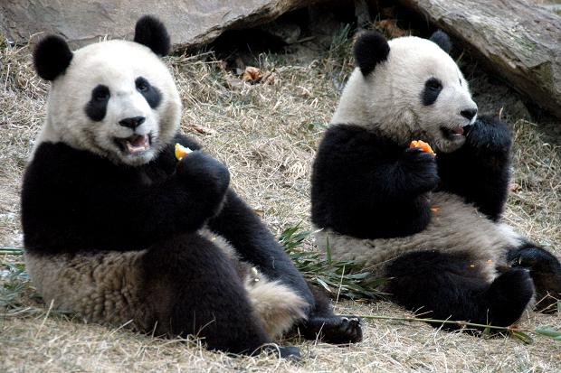

Panda
The blind infants weigh only about 140g at birth and cannot crawl until they reach three months of age. They are born white, and develop their much loved colouring later.
- Scientific Name: Ailuropoda melanoleuca
- Average Length: 2 - 3 feets
- Average Lifespan: 20 years
- Habitat: cool, wet bamboo forests
Giant pandas (often referred to as simply 'pandas') are black and white bears. In the wild, they are found in thick bamboo forests, high up in the mountains of central China - you can check out our cool facts about China, here!